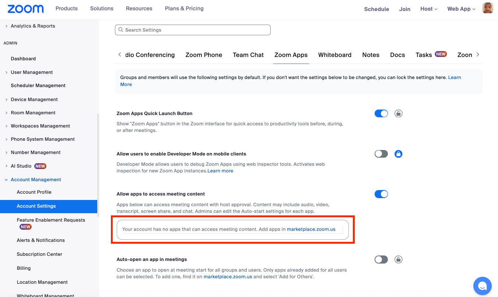
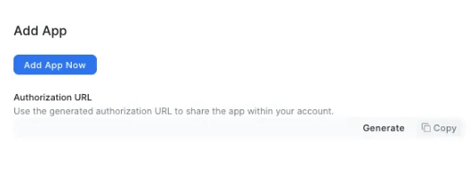
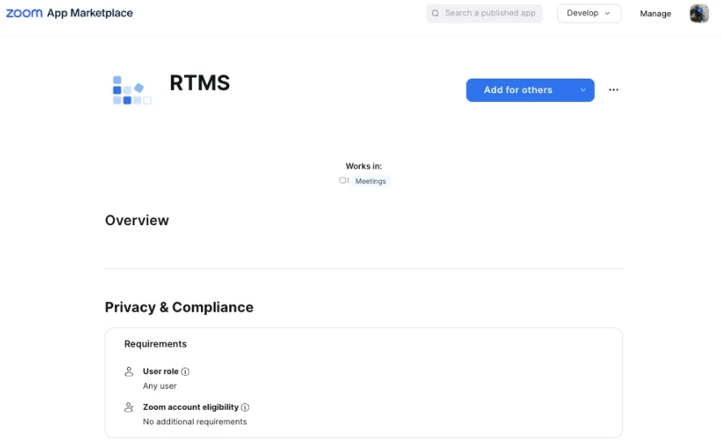
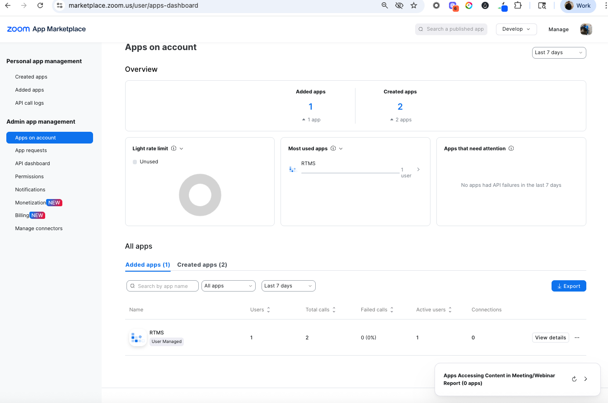
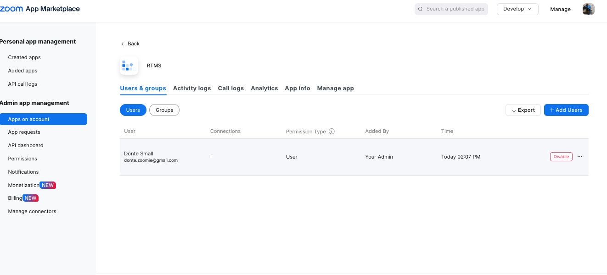
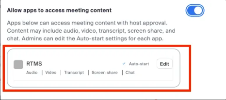
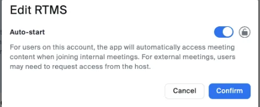
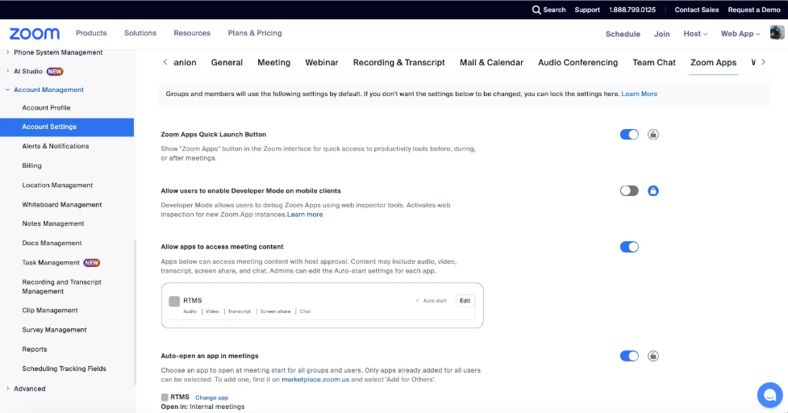

This codelab is a series focused on enable Zoom Real Time Media.
Enable Zoom App Real Time Media Streams with Zoom Markerplace app.
What you'll need
- Code editor and terminal
Prerequisites
- A Zoom Developer Account with RTMS enabled
RTMS is a data pipeline that gives your app access to live audio, video, and transcript data from Zoom Meetings. RTMS-enabled apps support AI and machine learning use cases and eliminates the need for participant bots or automated clients.
Resources
Update a Zoom General User-level OAuth app
In this section, you will update a user-managed Zoom App Marketplace general app and configure it with Zoom App and Team Chatbot features.
Update Zoom App with the Manifest API
- Make a PATCH request to update the app (test with Postman). After configuring the app, test it by sending a PATCH request to Zoom's API to update your app metadata or description.
- Method: PATCH
- URL: https://api.zoom.us/v2/marketplace/apps/<APP_ID>
- Headers:
- Authorization: Bearer <YOUR_ACCESS_TOKEN>
- Content-Type: application/json
Zoom Manifest API Request Body:
Zoom Manifest API JSON Ojbect
{
"manifest": {
"display_information": {
"display_name": "RTMS"
},
"oauth_information": {
"usage": "USER_OPERATION",
"development_redirect_uri": "https://your-ngrok-url.ngrok.io",
"production_redirect_uri": "",
"oauth_allow_list": [
"https://oauth.pstmn.io/v1/callback",
"https://your-ngrok-url.ngrok.io"
],
"strict_mode": false,
"subdomain_strict_mode": false,
"scopes": [
{
"scope": "rtms:read:rtms_started",
"optional": false
},
{
"scope": "rtms:read:rtms_stopped",
"optional": false
},
{
"scope": "zoomapp:inmeeting",
"optional": false
},
{
"scope": "meeting:read:meeting_audio",
"optional": false
},
{
"scope": "meeting:read:meeting_screenshare",
"optional": false
},
{
"scope": "meeting:read:meeting_video",
"optional": false
},
{
"scope": "meeting:read:meeting_chat",
"optional": false
},
{
"scope": "meeting:read:meeting_transcript",
"optional": false
},
{
"scope": "marketplace:read:app",
"optional": false
},
{
"scope": "meeting:read:meeting",
"optional": false
},
{
"scope": "team_chat:read:user_message",
"optional": false
},
{
"scope": "user:read:zak",
"optional": false
}
]
},
"features": {
"products": [
"ZOOM_MEETING"
],
"development_home_uri": "https://your-ngrok-url.ngrok.io",
"production_home_uri": "",
"domain_allow_list": [
{
"domain": "ngrok.app",
"explanation": ""
},
{
"domain": "appssdk.zoom.us",
"explanation": ""
},
{
"domain": "your-ngrok-url.ngrok.io",
"explanation": ""
}
],
"in_client_feature": {
"zoom_app_api": {
"enable": true,
"zoom_app_apis": [
"getAppContext",
"getMeetingContext",
"getMeetingUUID",
"getRunningContext",
"getSupportedJsApis",
"getUserContext",
"startRTMS",
"stopRTMS"
]
},
"guest_mode": {
"enable": false,
"enable_test_guest_mode": false
},
"in_client_oauth": {
"enable": false
},
"collaborate_mode": {
"enable": false,
"enable_screen_sharing": false,
"enable_play_together": false,
"enable_start_immediately": false,
"enable_join_immediately": false
}
},
"zoom_client_support": {
"mobile": {
"enable": false
},
"zoom_room": {
"enable": false,
"enable_personal_zoom_room": false,
"enable_shared_zoom_room": false,
"enable_digital_signage": false,
"enable_zoom_rooms_controller": false
},
"pwa_client": {
"enable": false
}
},
"embed": {
"meeting_sdk": {
"enable": true,
"enable_device": false,
"devices": []
},
"contact_center_sdk": {
"enable": false
},
"phone_sdk": {
"enable": false
}
},
"team_chat_subscription": {
"enable": false,
"enable_support_channel": false,
"shortcuts": []
},
"event_subscription": {
"enable": true,
"events": [
{
"subscription_id": "your-subscription-id",
"subscription_name": "RTMS EVENTS",
"event_types": [
"meeting.started",
"meeting.created",
"chat_message.sent",
"team_chat.channel_message_posted",
"meeting.rtms_started",
"meeting.rtms_stopped"
],
"development_webhook_url": "https://your-ngrok-url.ngrok.io/webhook",
"event_usage": "EVENT_FOR_USER",
"communicate_type": "WEB_HOOK"
}
]
}
}
}
}
- Only apps already added for all users can be selected to open at meeting start for all groups and users. 
- If the app is not already added to your account, in the Zoom Marketplace.
- On the local test page of your app, select add app: 
- Then to add the app for all users, find it on the App in the development tab:
https://marketplace.zoom.us/user/installed- Click the app and select ‘Add for Others': 
- Confirm RTMS enabled app is added to the account: 
- Select the app to add user, check activity, call logs, app info, and manage the app: 
- Navigate to the Zoom Apps account setting page:
https://us06web.zoom.us/account/setting?tab=zoomapps
- In Zoom Account setting, click enable allow apps to access meeting content

- Click Edit to configure the RTMS app:

4. Then enabled Auto-start so the app can automatically access meeting content: 
5. Enable auto-open an app in meetings: 
Congratulations! You now have a Zoom App Task Manager application built with Next.js that integrates with Supabase for authentication and storage, with Zoom Chat, Chatbot, and Real time media streams enabled.